Maksim, database management systems developer.
1. Research all possible ClickHouse optimizations, even if they are backward incompatible with the original ClickHouse codebase.
2. Build a system that is significantly faster than the original ClickHouse.
3. Beat Umbra in ClickBench benchmark.
4. Build some tooling around ClickHouse to measure performance and debug issues.
Data, queries, methodology, results are publicly available on GitHub: https://github.com/ClickHouse/ClickBench
Tests both Cold and Hot runs.
Based on Yandex Metrica anonymized hits dataset.
44 production like queries that represent typical analytical workload.
Very easy to run and reproduce results.
By default, all tests are run on c6a.4xlarge VM in AWS with 500 GB gp2 disk.
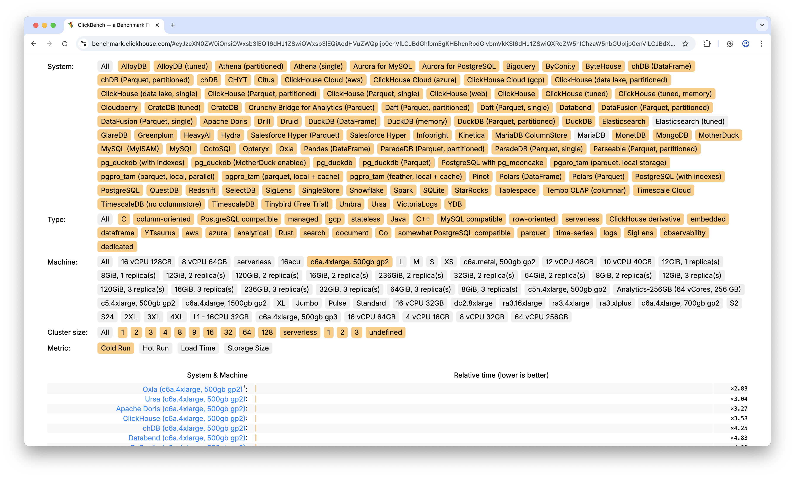
TODO: Compare with ClickHouse directly
TODO: now
Additionally, I was short on time and had around 2 holiday weeks for development, so I wanted to implement optimizations in order of importance.
I tried to measure potential performance improvement from some features before actual development to understand if it was worth it.
To measure every performance improvement during development, I developed a paw tool that I ran for all queries in ClickBench countless times and analyzed both on-CPU and off-CPU flame graphs for every query before and after different optimizations.
Before going into details of optimizations, I wanted to describe what tooling I used during the development of Ursa. I will show a simple example of paw tool usage and my typical workflow.
paw (Performance Analysis Workbench) is a very simple tool for performance testing, analysis, and continuous iteration over results.
https://github.com/kitaisreal/pawThe tool is tailored for such workflow:
profiles:
- name: clickhouse
driver: clickhouse
settings:
host: 127.0.0.1
port: 9000
- name: clickhouse_scatter_aggregation
driver: clickhouse
settings:
host: 127.0.0.1
port: 9000
force_scatter_aggregation: 1
- name: clickhouse_aggregation_scatter_copy_chunks
driver: clickhouse
settings:
host: 127.0.0.1
port: 9000
aggregation_scatter_based_on_statistics: 1
aggregation_default_scatter_algorithm: copy_chunks
collector_profiles:
- name: cpu_flamegraph
collector: cpu_flamegraph
settings:
build_seconds: 5
- name: off_cpu_flamegraph
collector: off_cpu_flamegraph
settings:
build_seconds: 5
settings:
query_measure_runs: 5
name: ClickBench
collectors:
- cpu_flamegraph
queries:
- SELECT COUNT(*) FROM hits;
- SELECT COUNT(*) FROM hits WHERE AdvEngineID <> 0;
- SELECT SUM(AdvEngineID), COUNT(*), AVG(ResolutionWidth) FROM hits;
- SELECT AVG(UserID) FROM hits;
- SELECT COUNT(DISTINCT UserID) FROM hits;
- SELECT COUNT(DISTINCT SearchPhrase) FROM hits;
...
- SELECT DATE_TRUNC('minute', EventTime) AS M, COUNT(*) AS PageViews FROM hits ...
Then you can run paw with:
./paw record -c config.yaml clickbench.yaml -o clickhouse_dev_clickbench_cpu_only
Then you can check results in clickhouse_dev_clickbench_cpu_only directory using web viewer:
./paw view clickhouse_dev_clickbench_cpu_only
Queries in single test result:
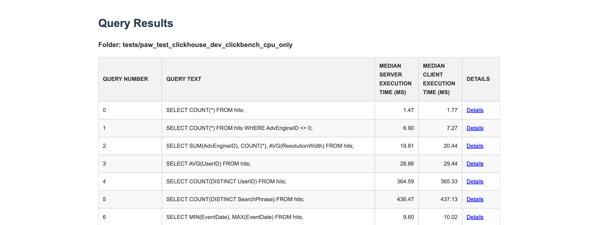
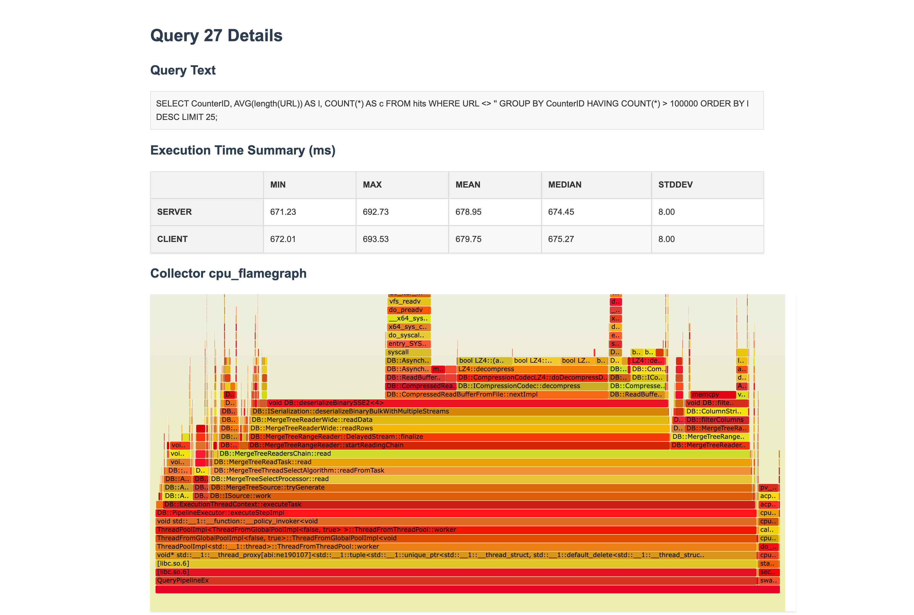
Then, when you find a place for performance improvement and implement optimization in ClickHouse, you can rerun the test and recheck the results:
./paw record -c config.yaml clickbench_cpu_only.yaml -o ursa_clickbench_cpu_only
Now you can compare two test results using web viewer:
./paw view clickhouse_dev_clickbench_cpu_only ursa_clickbench_cpu_only
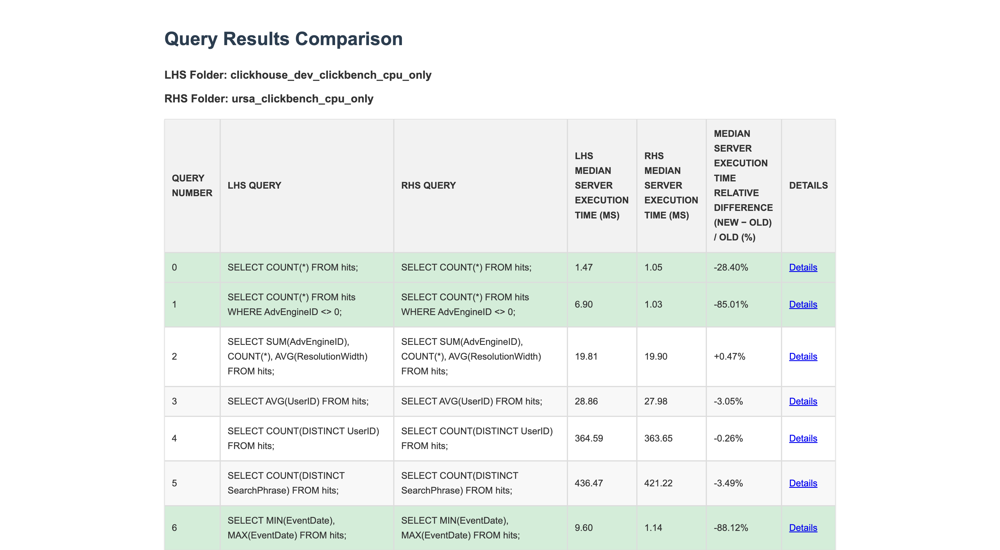
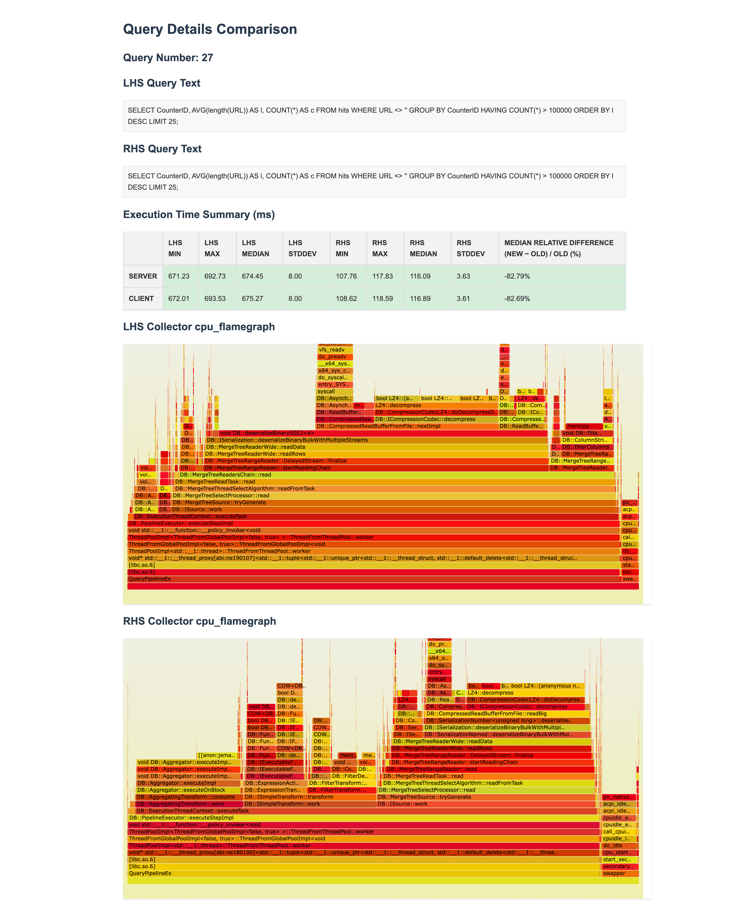
I will describe all the new features that I implemented in Ursa 0.0.1 in order of importance:
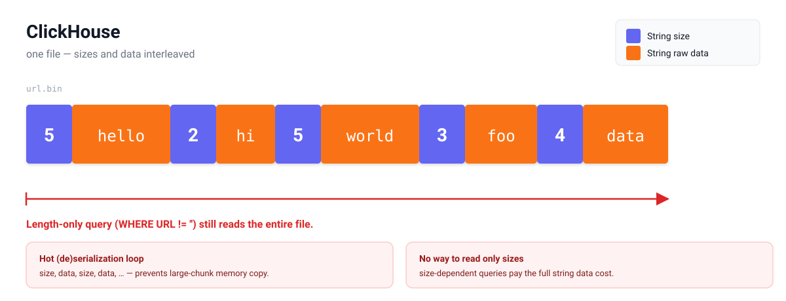
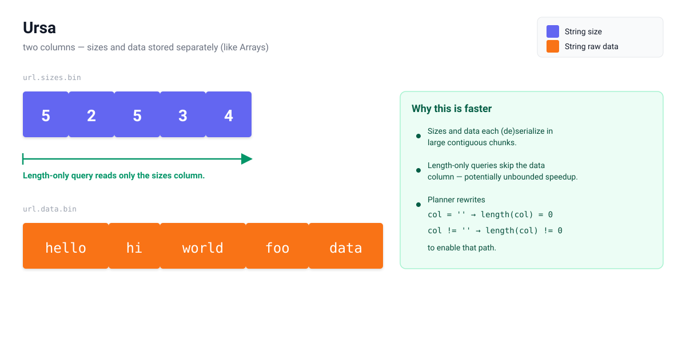
Query performance in ClickHouse:
SELECT CounterID, AVG(length(URL)) AS l, COUNT(*) AS c FROM hits
WHERE URL <> '' GROUP BY CounterID HAVING COUNT(*) > 100000
ORDER BY l DESC LIMIT 25 FORMAT Null;
0 rows in set. Elapsed: 0.641 sec. Processed 100.00 million rows, 10.34 GB
Peak memory usage: 120.11 MiB.
Query performance in Ursa:
SELECT CounterID, AVG(length(URL)) AS l, COUNT(*) AS c FROM hits
WHERE URL <> '' GROUP BY CounterID HAVING COUNT(*) > 100000
ORDER BY l DESC LIMIT 25 FORMAT Null;
0 rows in set. Elapsed: 0.125 sec. Processed 100.00 million rows, 1.20 GB
Peak memory usage: 1.42 MiB.
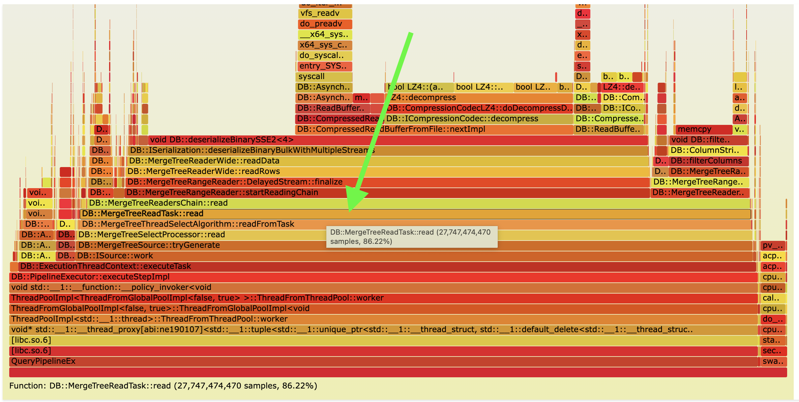
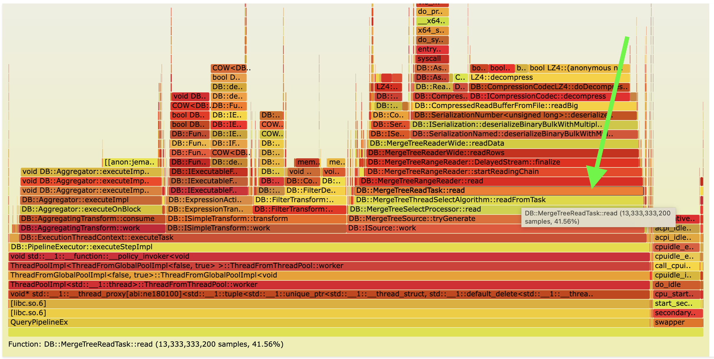
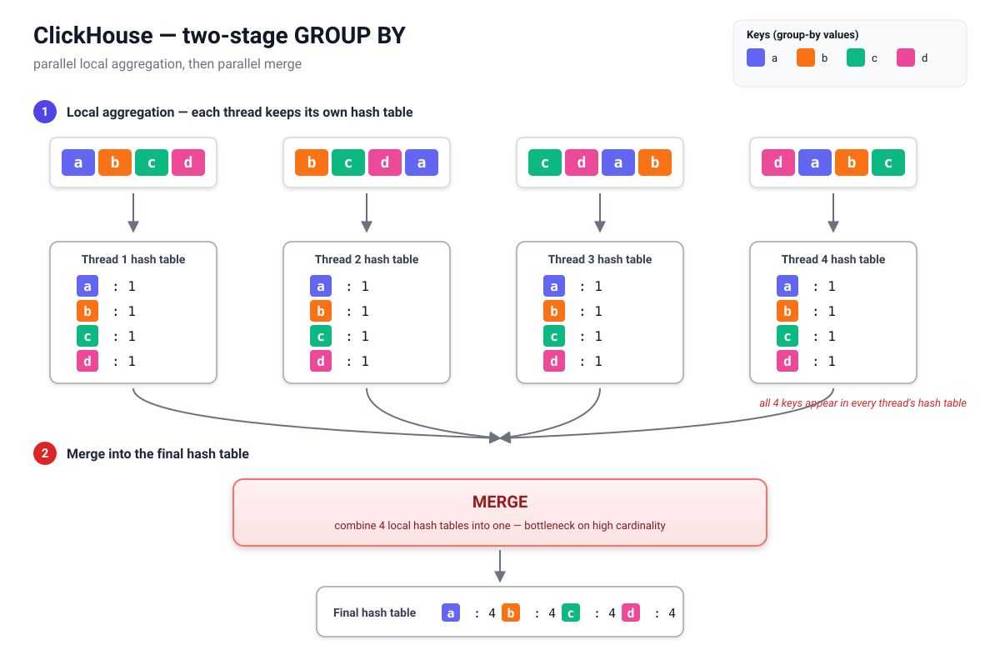
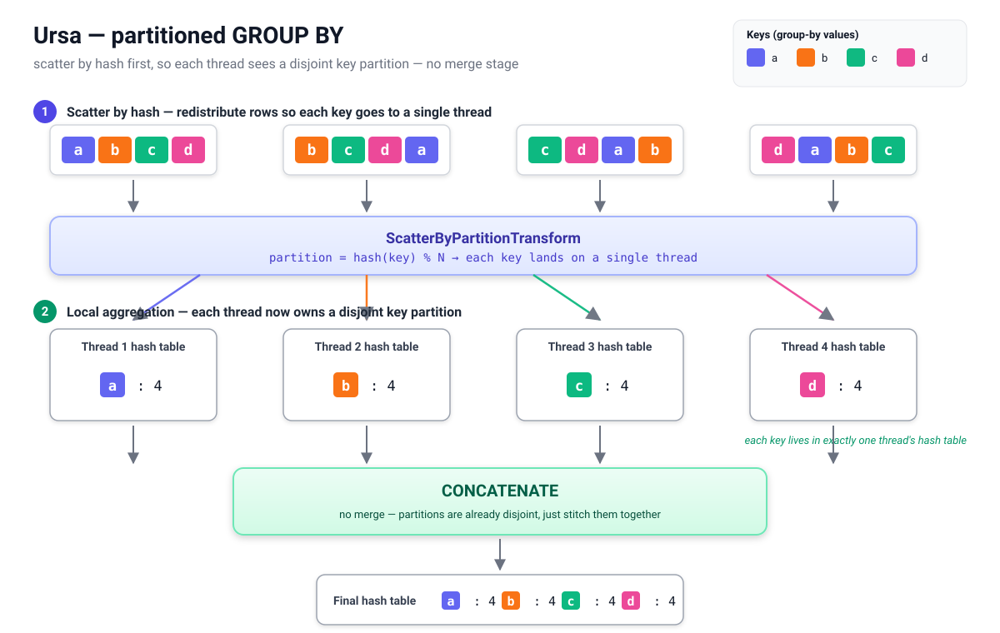
To properly dispatch between partitioned and ordinary GROUP BY, I used runtime statistics that are collected in ClickHouse during GROUP BY.
Using these statistics, it is possible to understand if aggregation is high-cardinality and dispatch to the necessary method.
Query performance in ClickHouse:
SELECT WatchID, ClientIP, COUNT(*) AS c, SUM(IsRefresh),
AVG(ResolutionWidth) FROM hits
GROUP BY WatchID, ClientIP ORDER BY c DESC LIMIT 10 FORMAT Null;
0 rows in set. Elapsed: 4.061 sec. Processed 100.00 million rows, 1.60 GB
Peak memory usage: 10.27 GiB.
Query performance in Ursa:
SELECT WatchID, ClientIP, COUNT(*) AS c, SUM(IsRefresh),
AVG(ResolutionWidth) FROM hits
GROUP BY WatchID, ClientIP ORDER BY c DESC LIMIT 10 FORMAT Null;
0 rows in set. Elapsed: 2.460 sec. Processed 100.00 million rows, 1.60 GB
Peak memory usage: 10.06 GiB.
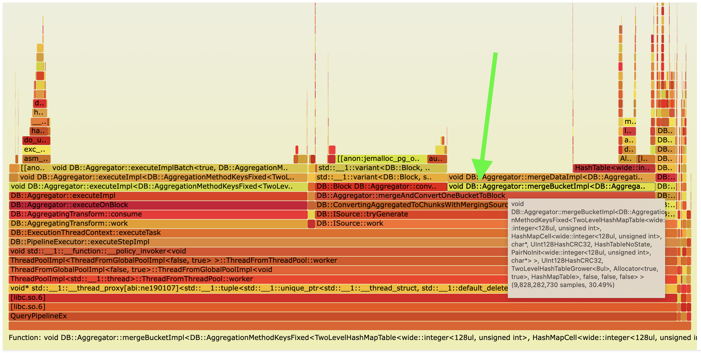
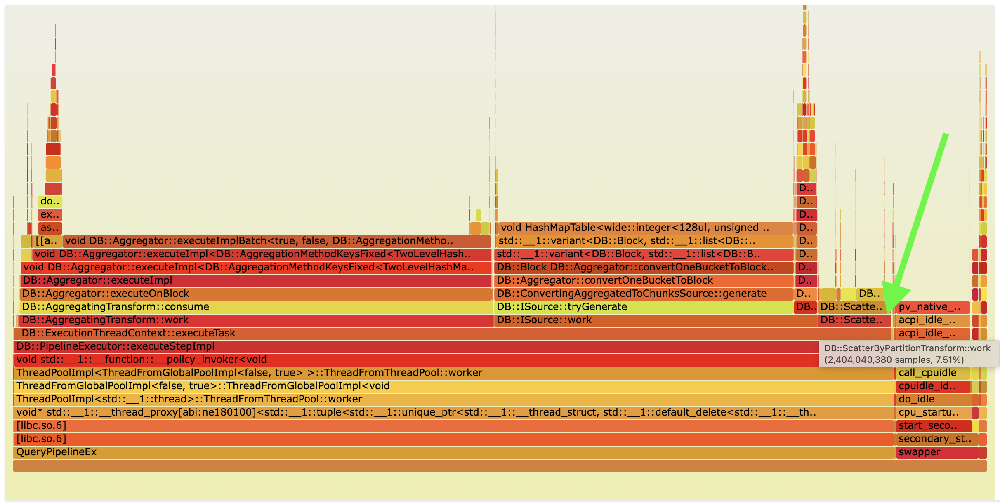
Let's take a look at the following query:
SELECT
UserID,
extract(minute FROM EventTime) AS m,
SearchPhrase,
COUNT(*)
FROM hits
GROUP BY UserID, m, SearchPhrase ORDER BY COUNT(*) DESC LIMIT 10;
0 rows in set. Elapsed: 3.484 sec. Processed 100.00 million rows, 2.84 GB
Peak memory usage: 8.21 GiB.
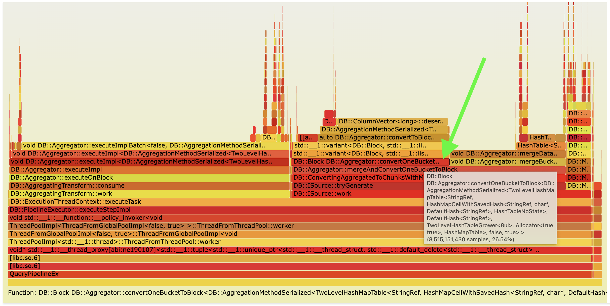
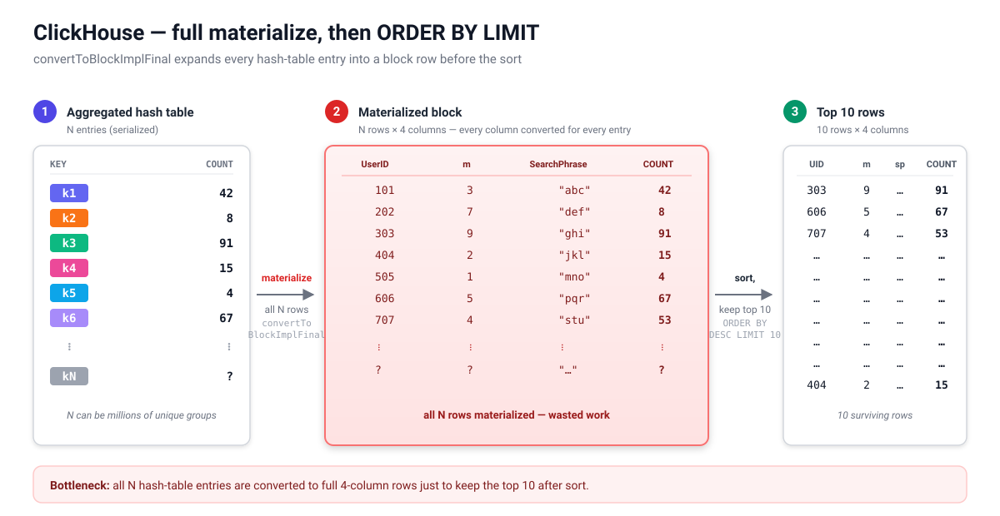
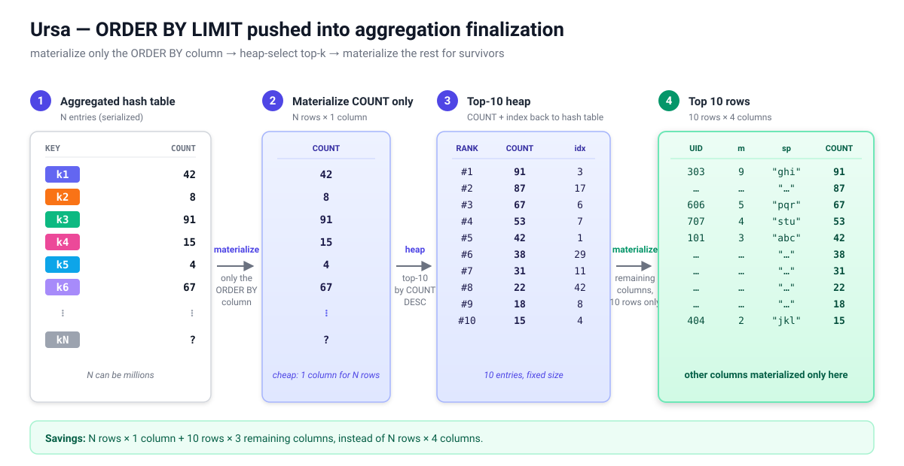
Query performance in Ursa:
SELECT
UserID,
extract(minute FROM EventTime) AS m,
SearchPhrase,
COUNT(*)
FROM hits
GROUP BY UserID, m, SearchPhrase ORDER BY COUNT(*) DESC LIMIT 10;
0 rows in set. Elapsed: 2.910 sec. Processed 100.00 million rows, 2.84 GB
Peak memory usage: 8.15 GiB.
Around 16% speedup in Ursa for such query.
It is also possible to optimize with operator fusion a bit different queries, where ORDER BY after GROUP BY does not depend on any computed aggregate functions. For example, such query:
SELECT UserID, extract(minute FROM EventTime) AS m, SearchPhrase,
COUNT(*) FROM hits
GROUP BY UserID, m, SearchPhrase ORDER BY SearchPhrase DESC LIMIT 10;
Or if you have a query without ORDER BY only with LIMIT after GROUP BY:
SELECT UserID, SearchPhrase, COUNT(*) FROM hits
GROUP BY UserID, SearchPhrase LIMIT 10;
Such queries are rare, but for such queries, you can fuse aggregation, ORDER BY, and LIMIT into a single operator.
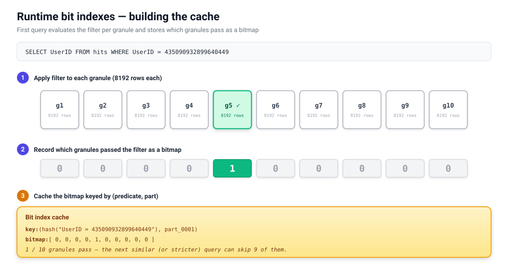
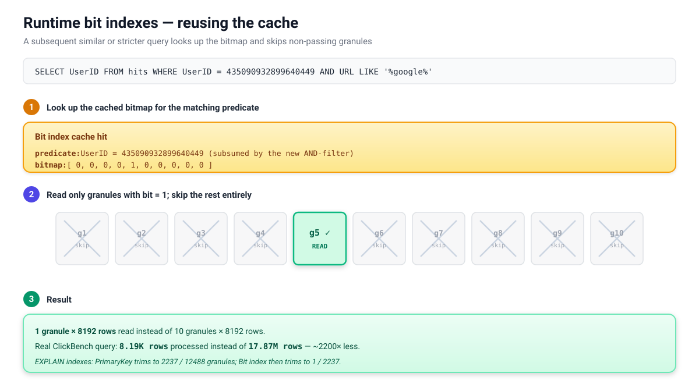
Query performance in ClickHouse:
SELECT UserID FROM hits WHERE UserID = 435090932899640449 FORMAT Null;
0 rows in set. Elapsed: 0.015 sec. Processed 17.87 million rows, 142.95 MB
Peak memory usage: 562.28 KiB.
Query performance in Ursa:
SELECT UserID FROM hits WHERE UserID = 435090932899640449 FORMAT Null;
0 rows in set. Elapsed: 0.002 sec. Processed 8.19 thousand rows, 65.54 KB
Peak memory usage: 5.38 KiB.
I also added introspection for this feature in EXPLAIN indexes = 1:
EXPLAIN indexes = 1 SELECT UserID FROM hits WHERE UserID = 435090932899640449;
┌─explain─────────────────────────────────────────────────────────────────┐
│ Expression ((Project names + Projection)) │
│ Expression │
│ ReadFromMergeTree (default.hits) │
│ Indexes: │
│ PrimaryKey │
│ Keys: │
│ UserID │
│ Condition: (UserID in [435090932899640449, 435090932899640449]) │
│ Parts: 1/1 │
│ Granules: 2237/12488 │
│ Bit │
│ Parts: 1/1 │
│ Granules: 1/2237 │
└─────────────────────────────────────────────────────────────────────────┘
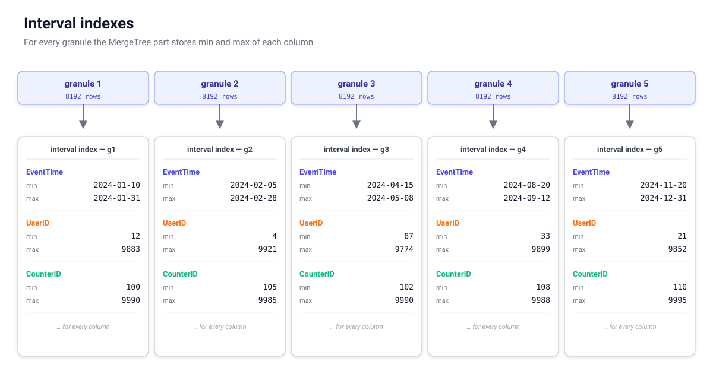
Such interval indexes help speed up a lot of queries. For example, let’s take a look at such query:
SELECT * FROM hits ORDER BY EventTime LIMIT 10;
For each MergeTree part during the read planning stage, we can sort min values for each granule and take the top 10. Then, we can read only 10 granules because the necessary rows will not be in any other granules.
Query performance in ClickHouse:
SELECT * FROM hits ORDER BY EventTime LIMIT 10 FORMAT Null;
0 rows in set. Elapsed: 0.757 sec. Processed 100.00 million rows, 1.20 GB
Peak memory usage: 16.75 MiB.
Query performance in Ursa:
SELECT * FROM hits ORDER BY EventTime LIMIT 10 FORMAT Null;
0 rows in set. Elapsed: 0.080 sec. Processed 75.37 thousand rows, 55.57 MB
Peak memory usage: 38.18 MiB.
I also added introspection for this feature in EXPLAIN indexes = 1:
EXPLAIN indexes = 1 SELECT * FROM hits ORDER BY EventTime LIMIT 10;
┌─explain─────────────────────────────────────────────────────────────────────────────────────────┐
│ Expression (Project names) │
│ Limit (preliminary LIMIT (without OFFSET)) │
│ Sorting (Sorting for ORDER BY) │
│ Expression ((Before ORDER BY + (Projection + Change column names to column identifiers))) │
│ ReadFromMergeTree (default.hits) │
│ Indexes: │
│ PrimaryKey │
│ Condition: true │
│ Parts: 1/1 │
│ Granules: 12488/12488 │
│ Interval │
│ Parts: 1/1 │
│ Granules: 10/12488 │
└─────────────────────────────────────────────────────────────────────────────────────────────────┘
I also used interval indexes for simple min/max query optimization, similar to optimize_trivial_count_query optimization in ClickHouse.
Query performance in ClickHouse:
SELECT MIN(EventDate), MAX(EventDate) FROM hits FORMAT Null;
1 row in set. Elapsed: 0.010 sec. Processed 100.00 million rows, 199.99 MB
Peak memory usage: 153.76 KiB.
Query performance in Ursa:
SELECT MIN(EventDate), MAX(EventDate) FROM hits FORMAT Null;
1 row in set. Elapsed: 0.001 sec.
In ClickHouse, it is possible that for low-latency queries primary key index analysis or skipping index analysis will become a bottleneck.
To avoid this, we can cache index analysis results in memory for specific predicates inside parts. This optimization is implemented in Ursa.
Let’s take a look at this query in Ursa with disabled index analysis cache and bit indexes:
SELECT UserID FROM hits WHERE UserID = 435090932899640449 FORMAT Null
SETTINGS use_index_analysis_cache = 0, use_bit_indexes = 0;
0 rows in set. Elapsed: 0.016 sec. Processed 17.66 million rows, 141.29 MB
Peak memory usage: 41.05 KiB.
If we enable the index analysis cache, we will get around 40% performance improvement:
SELECT UserID FROM hits WHERE UserID = 435090932899640449 FORMAT Null
SETTINGS use_index_analysis_cache = 1, use_bit_indexes = 0;
0 rows in set. Elapsed: 0.010 sec. Processed 17.66 million rows, 141.29 MB
Peak memory usage: 40.18 KiB.
If we disable the index analysis cache and enable bit indexes:
SELECT UserID FROM hits WHERE UserID = 435090932899640449 FORMAT Null
SETTINGS use_index_analysis_cache = 0, use_bit_indexes = 1;
0 rows in set. Elapsed: 0.007 sec. Processed 8.19 thousand rows, 65.54 KB
Peak memory usage: 5.46 KiB.
Only if we enable both index analysis cache and bit indexes, we will get the most performance out of this query:
SELECT UserID FROM hits WHERE UserID = 435090932899640449 FORMAT Null
SETTINGS use_index_analysis_cache = 1, use_bit_indexes = 1;
0 rows in set. Elapsed: 0.002 sec. Processed 8.19 thousand rows, 65.54 KB
Peak memory usage: 5.46 KiB.
Let's take a look at this query:
SELECT * FROM hits WHERE URL LIKE '%google%' ORDER BY EventTime LIMIT 10;
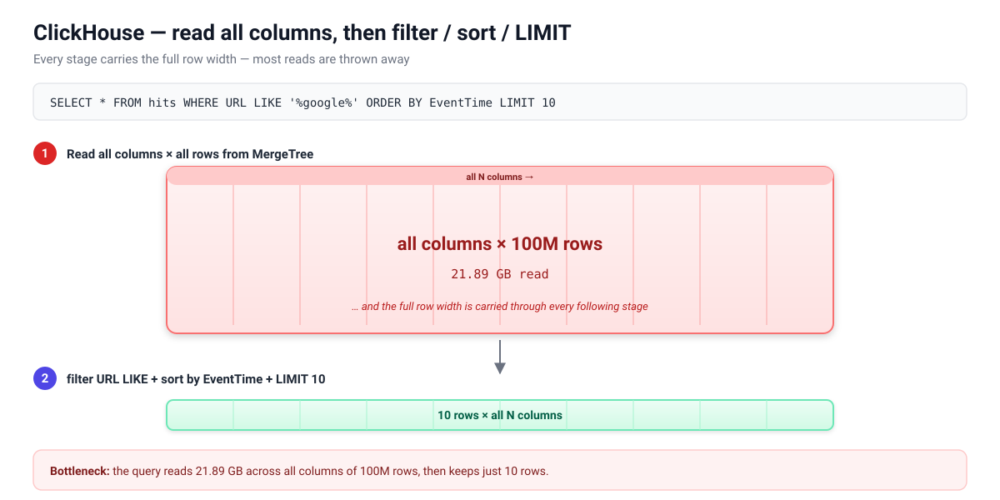
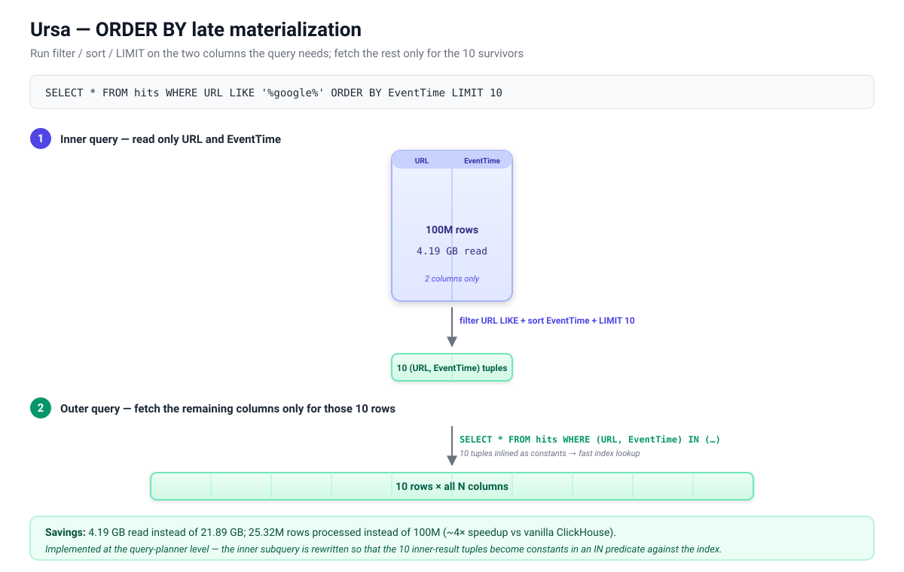
In Ursa this optimization is implemented on the query planning level.
Query:
SELECT * FROM hits WHERE URL LIKE '%google%' ORDER BY EventTime LIMIT 10;
Is transformed into:
SELECT * FROM hits WHERE (URL, EventTime)
IN (
SELECT URL, EventTime FROM hits
WHERE URL LIKE '%google%'
ORDER BY EventTime LIMIT 10
) ORDER BY EventTime LIMIT 10;
Query performance in ClickHouse without lazy materialization:
SELECT * FROM hits WHERE URL LIKE '%google%'
ORDER BY EventTime LIMIT 10 FORMAT Null
SETTINGS query_plan_optimize_lazy_materialization = 0;
0 rows in set. Elapsed: 2.550 sec. Processed 100.00 million rows, 21.89 GB
Peak memory usage: 1.22 GiB.
Query performance in ClickHouse with lazy materialization:
SELECT * FROM hits WHERE URL LIKE '%google%'
ORDER BY EventTime LIMIT 10 FORMAT Null
SETTINGS query_plan_optimize_lazy_materialization = 1;
0 rows in set. Elapsed: 1.207 sec. Processed 100.00 million rows, 10.81 GB
Peak memory usage: 117.91 MiB.
Query performance in Ursa:
SELECT * FROM hits WHERE URL LIKE '%google%'
ORDER BY EventTime LIMIT 10 FORMAT Null;
0 rows in set. Elapsed: 0.379 sec. Processed 25.32 million rows, 4.19 GB
Peak memory usage: 120.91 MiB.
There is around a 4x speedup in Ursa for such a query.
Sometimes, you can achieve significant performance improvement not only by using some high-level complex optimizations but also by using better algorithms and data structures for your specific tasks or by small source code level optimizations.
Blog post https://maksimkita.com/blog/power-of-small-optimizations.html
Talk about ClickHouse performance optimization techniques at C++ Russia 2023.
Talk about ClickHouse performance optimization practices at C++ Russia 2022.